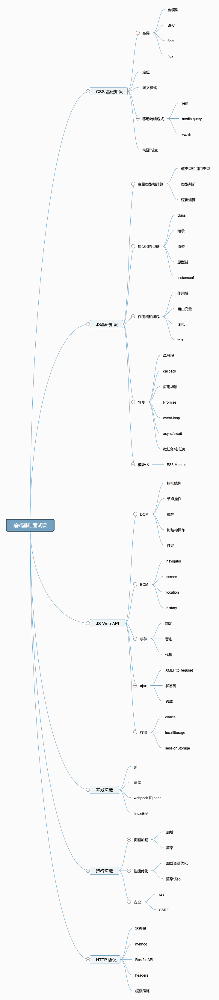

知识体系思维导图
面试题
HTML 面试题
- 如何理解 HTML 语义化
- 默认情况下，哪些 HTML 标签是块级元素、哪些是內联元素
CSS - 布局（1）
- 盒子模型的宽度如何计算
- margin 纵向重叠的问题
- margin 负值的问题
CSS - 布局（2）
- BFC 理解和应用
- float 布局的问题，以及 clearfix
- flex 画色子
CSS - 定位
- absolute 和 relative 分别依据什么定位
- 居中对齐有哪些实现方式
CSS - 图文样式
- line-height的继承问题
CSS - 响应式
- rem 是什么
- 如何实现响应式
变量类型和计算
- typeof 能判断哪些类型
- 何时使用 === 何时使用 ==
- 值类型和引用类型的区别
- 手写深拷贝
原型和原型链
- 如何准确判断一个变量是不是数组
- 手写一个简易的 jQuery，考虑插件和扩展性
- class 的原型本质，怎么理解
作用域和闭包
- this的不同应用场景，如何取值
- 手写bind函数
- 实际开发中闭包的应用场景，举例说明
- 循环定义生成十个 a 标签，弹出的 i 是多少
异步和单线程
- 同步和异步的区别是什么
- 手写用 Promise 加载一张图片
- 前端使用异步的场景有哪些
- 异步执行顺序问题
JS 异步进阶
- 请描述 event loop（事件循环/事件轮询）的机制，可画图
- 什么是宏任务和微任务，两者有什么区别
- Promise 有哪三种状态？如何变化
- promise、then 和 catch 的连接
- async / await 的语法
- promise 和 setTimeout 的顺序
- 外加 async / await 的顺序问题
DOM
- DOM 是哪种数据结构
- DOM 操作的常用 API
- attr 和 property 的区别
- 一次性插入多个 DOM 节点，考虑性能
BOM
- 如何识别浏览器的类型
- 分析拆解 url 各个部分
事件
- 编写一个通用的事件监听函数
- 描述事件冒泡的流程
- 无限下拉的图片列表，如何监听每个图片的点击
ajax
- 手写一个简易的 ajax
- 跨域的常用实现方式
存储
- 描述 cookie、localStorage、sessionStorage 区别
页面加载过程
- 从输入 url 到渲染出页面的整个过程
- window.onload 和 DOMContentloaded 的区别
性能优化
- 前端常见性能优化方案
- 手写节流和防抖（体验优化）
安全
- Web 前端常见的安全攻击方式及预防
http
- http 常见的状态码有哪些
- http 常见的 header 有哪些
- 什么是 Restful api
- 描述一下 http 的缓存机制（重要）
面试技巧
关于简历
1.简洁明了，突出个人技能和项目经验
2.可以把个人博客、开源作品放在简历中（但博客要有内容）
3.不要造假，保证能力上的真实性（斟酌用词，如精通xxx，写了解，最多写个熟练）
面试过程中注意事项
1.如何看待加班：像借钱，救急不救穷
2.千万不要挑战面试官，反考面试官
3.学会给面试官惊喜，证明你能想到更多，做的更好，但不要太多
4.遇到不会的问题，说出你知道的部分即可，但别岔开话题
5.谈谈你的缺点：说一下你最近在学什么即可